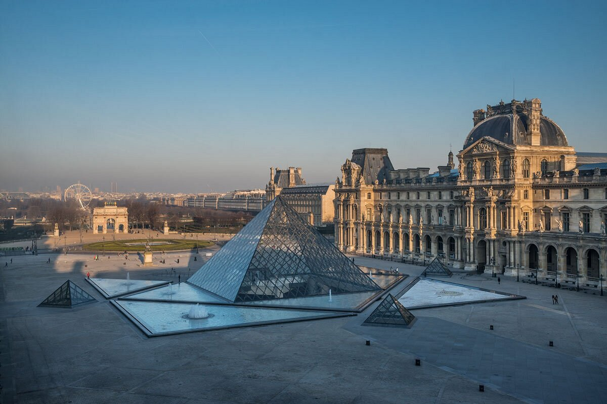
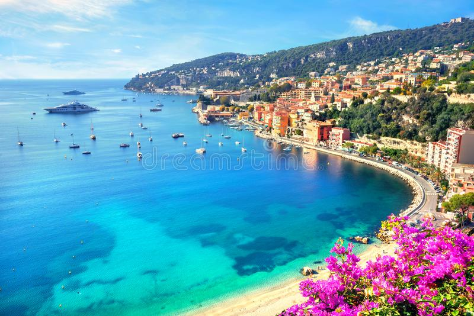

|
|
Best Place To Visit In France
Eiffel Tower
 |
Eiffel Tower is the symbol of Paris, the Eiffel Tower is a feat of ingenuity as much as it is a famous landmark. The Eiffel Tower is a wrought-iron lattice tower on the Champ de Mars in Paris, France. The Eiffel Tower's gracefulness has earned it the nickname of "Iron Lady." Visitors are impressed by the tower's delicate airiness despite its monumental size and the breathtaking panoramas at each of the three levels.Tourists can dine with a view at the first level or indulge at the Michelin-starred Le Jules Verne restaurant on the second level. During its construction, the Eiffel Tower surpassed the Washington Monument to become the tallest man-made structure in the world, a title it held for 41 years until the Chrysler Building in New York City was finished in 1930. |
Louvre Museum
The Louvre or the Louvre Museum is the world's most-visited museum, and a historic landmark in Paris, France. In a stately palace that was once a royal residence, the Louvre Museum ranks among the top European collections of fine arts.The collection owes its wealth to the contributions of various kings who lived in the Louvre.The Louvre displays around 35,000 artworks, including countless masterpieces. It's impossible to see it all in a day or even in a week.A central landmark of the city, it is located on the Right Bank of the Seine in the city's 1st arrondissement. The Académie remained at the Louvre for 100 years. The Louvre exhibits sculptures, objets d'art, paintings, drawings, and archaeological finds. |
 |
French Riviera
|  | The French Riviera is the Mediterranean coastline of the southeast corner of France. There is no official boundary, but it is usually considered to extend from Toulon, Le Lavandou or Saint-Tropez in the west to Menton at the France–Italy border in the east. Riviera is an Italian word that originates from the ancient Ligurian territory of Italy, wedged between the Var and Magra rivers. The Côte d'Azur (coast of azure) is a nickname given by France to the County of Nice after its annexation in 1860, because the climate was similar to that of the north of Italy, even in winter, with a sky as blue as its sea. The term French Riviera comes by analogy with the term Italian Riviera, which extends east of the French Riviera. |
Mont Saint-Michel
Mont-Saint-Michel is a tidal island and mainland commune in Normandy, France. Rising dramatically from a rocky islet off the Normandy coast, the UNESCO-listed Mont Saint-Michel is one of France's most striking landmarks. This "Pyramid of the Seas" is a mystical sight, perched 80 meters above the bay and surrounded by imposing defensive walls and bastions.The main tourist attraction, the Abbaye du Mont Saint-Michel is a marvel of medieval architecture with soaring Gothic spires. Visitors are awed by the serene beauty of the Abbey Church, with its harmonious Romanesque nave and ornate high-vaulted choir. It is visited by more than 3 million people each year. Over 60 buildings within the commune are protected in France as monuments historiques. |
Châteaux of the Loire Valley
The châteaux of the Loire Valley are part of the architectural heritage of the historic towns of Amboise, Angers, Blois, Chinon, Montsoreau, Orléans, Saumur, and Tours along the river Loire in France. They illustrate Renaissance ideals of design in France. Traveling through the Loire Valley gives the impression of stepping into a children's storybook. Turreted fairy-tale castles grace the enchanting countryside of dense woodlands and gently flowing rivers. The entire area of the Loire Valley, a lush area known as the "Garden of France," is listed as a UNESCO World Heritage Site.Some of the Loire castles are medieval fortresses built on hilltops and surrounded by ramparts. The châteaux and their surrounding gardens are cultural monuments which embody the ideals of the Renaissance and Enlightenment. |
Provence
Provence is a geographical region and historical province of southeastern France, which extends from the left bank of the lower Rhône to the west to the Italian border to the east, it is bordered by the Mediterranean Sea to the south. Provence invites visitors to escape into a dreamy bucolic landscape of olive groves, sun-drenched rolling hills, and deep purple lavender fields, with little villages nestled in the valleys and perched on rocky outcrops.Among the many attractions of Provence is its delicious Mediterranean cuisine, which is based on olive oil, vegetables, and aromatic herbs. Tourists can choose from a wide range of culinary establishments, from family-run bistros to Michelin-starred gastronomic restaurants. |
Alsace Villages
Some of the prettiest villages in France are tucked away in the green, rolling hills of Alsace, where the Vosges Mountains border the Rhine River of Germany.Many of the villages have won France's "Villages Fleuris" award for their lovely floral decorations, such as Obernai, with its characteristic burghers' houses; the charming little village of Ribeauvillé, where many homes are adorned with potted flowers; the "town of art and history" Guebwiller; and the captivating medieval village of Bergheim. |
Carcassonne
Carcassonne is a French fortified city in the department of Aude, in the region of Occitanie. It is the prefecture of the department. With its turreted towers and crenellated ramparts, Carcassonne seems straight out of a fairy-tale scene. This well-preserved and renovated fortified city offers a total immersion into the world of the Middle Ages.Must-see tourist attractions are the double-circuited ramparts with 52 towers and the Basilique Saint-Nazaire et Saint-Celse, which features splendid 13th-century stained-glass windows. ts citadel, known as the Cité de Carcassonne, is a medieval fortress dating back to the Gallo-Roman period and restored by the theorist and architect Eugène Viollet-le-Duc in 1853. |
 |
Brittany
 |
Brittany is a beautiful historic region on the northeastern coast of France. Brittany is a peninsula, historical country, and cultural area in the west of modern France, covering the western part of what was known as Armorica during the period of Roman occupation. A rugged coastline, quaint fishing villages, and weathered seaports characterize this region, which is steeped in ancient traditions and famous for its costumed religious festivals.A mystical land of myths and legends, Brittany has a Celtic influence and a dialect related to Gaelic.The quintessential Breton port is Saint-Malo surrounded by ancient walls. Brittany is the site of some of the world's oldest standing architecture, home to the Barnenez, the Tumulus Saint-Michel and others, which date to the early 5th millennium BC. |
Biarritz
Biarritz is a city on the Bay of Biscay, on the Atlantic coast in the Pyrénées-Atlantiques department in the French Basque Country in southwestern France. It is a fashionable beach town on the beautiful Bay of Biscay in France's Basque country.This large sandy beach, with its broad seafront promenade, has attracted high-society vacation goers since the Belle Epoque.Other must-see sights of Biarritz are related to the ocean: the Biarritz Aquarium; Lighthouse; and Rocher de la Vierge figure, which stands along the coastline on an immense rock beaten by the Atlantic's wild waves. It is a luxurious seaside tourist destination known for the Hôtel du Palais, its casinos in front of the sea and its surfing culture. |
Rocamadour
Rocamadour is a commune in the Lot department in Southwestern France. It lies in the former province of Quercy. Suspended between heaven and earth on a sheer limestone cliff, Rocamadour is an unforgettable sacred site.The village has seven ancient sanctuaries, but pilgrims flock to the Chapelle Notre-Dame, which possesses the venerated Black Virgin. This precious Virgin Mary figure was carved from walnut wood that naturally darkened over the centuries and is associated with miracles. Rocamadour has attracted visitors for its setting in a gorge above a tributary of the River Dordogne and especially for its historical monuments and its sanctuary of the Blessed Virgin Mary, which for centuries has attracted pilgrims from many countries, among them kings, bishops and nobles. |